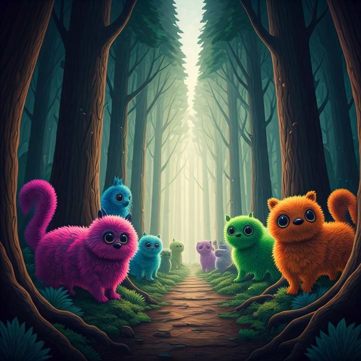

Base Camp
A team of ecologists has hired your group to estimate the Statfloof population. Statfloofs come in two varieties, black and white. You can't see them all at once because they are always ducking in and out of their burrows. You can't tell one apart from another either, so there's no way to count them.
What you can do is catch a few, mark them, let them go, and see how many marked ones turn up the next time you look. Ecologists call this capture and recapture.
Your instructor will give everyone the same code, so every team studies the same forest. Then the class can compare estimates.
Official Research Permit
Your mission: estimate how many Statfloofs live here, and say how much you trust your estimate. By the end you'll have used every big idea in Chapter 15 without reading a page of it.
The Ranger's Questions
The forest ranger left a stack of questions at base camp. Some of them have one fixed answer. Others are statistical questions:
Sort each card. Talk it over as a group before you flip it.
Talk it over
Capture & Tag
Set your traps
In the blocks version, every researcher swapped 3 blocks for 3 of their own color. Here you choose. You can come back and re-tag any time.
Floofs to tag: 20

Talk it over
Recapture & Estimate
Talk it over
The Field Log
A real ecologist would never trust one handful. Every recapture gives a slightly different estimate, so keep recapturing and watch the pattern build. Each dot is one estimate.
*The mean and the ▲ leave out handfuls that found no tags. Counting a zero-tag handful's estimate of ∞, the mean would be infinite too. The median has no such problem.
Bonus field note: black or white?
Recapture a few times to find out.
Look closely
- Where do most of your estimates pile up?
- Are the estimates spread evenly on both sides of the pile, or is one side longer? Why might that be?
- Is the mean or the median bigger? What pulled it that way?
Talk it over
The Tinker Lab
Welcome to the Practice Meadow, where we know for certain there are exactly 300 Statfloofs. Set up two different research plans. Each one runs 300 whole expeditions (tag, wait a night, recapture). Which plan's estimates bunch up closer to 300?
Plan A
Plan B
Under each dot plot is a box plot. The box holds the middle half of the estimates, and the line inside it is the median. A narrower box means the plan is more consistent. You'll build these by hand in Section 15.4.
Talk it over
When the Method Breaks
Back in the Practice Meadow (300 floofs, 40 tagged, handfuls of 75), things don't always go to plan. Pick a problem, predict what it does to the estimates, then run it and compare with a fair forest.
← Choose a problem above.
Talk it over
Floofs in the Wild
Fish in the North Sea
In the 1890s the Danish biologist C. G. J. Petersen tagged plaice (a flatfish), released them, and used the tagged share of later catches to study the population.
Ducks with leg bands
In 1930 Frederick Lincoln used bird-banding returns to estimate North American waterfowl numbers. The simple estimate you used today is still called the Lincoln–Petersen estimator.
Tags you don't have to attach
Humpback whale tail flukes and tiger stripes are unique. Researchers treat a photo of a known animal as a "recapture," so nobody has to catch anything.
Counting people
After a census, the U.S. Census Bureau independently re-surveys a sample of blocks and matches the two lists to estimate how many people the census missed. It's the same capture-recapture logic.
Talk it over
Your team's field report
Everything you've written on this page is saved in this browser. Copy it all as one report to paste wherever your instructor collects work.
The Chapter 15 Trail
15.1 Statistical questions & samples Stations 2 & 4
15.2 Displaying data Station 5
15.3 The center of data Station 5
15.4 Summarizing distributions Stations 6 & 7
For the instructor
- Forest codes. Any code works. Each code seeds its own hidden population (140 to 340 floofs) and its own black/white mix. Give the whole class one code so estimates are comparable. Use a new code for a second section or a second run.
- Collecting estimates. Have each team put its first estimate and its field-log median on the board before anyone presses Reveal. A class dot plot of the medians is a nice bridge to 15.2.
- Pacing. Stations 1–5 fit in about 30 minutes with groups of 3–4 sharing a laptop. Stations 6–7 make a good second half or homework. Station 9 is the wrap-up.
- Physical version. This page works alongside the blocks. Do a real round first, then use Station 5 to show what hundreds of rounds look like.
- Math notes. The estimate is the Lincoln–Petersen estimator N̂ = Mn/m. It is skewed right and biased upward with small samples, which is why the mean usually sits to the right of the median. The number of tagged floofs in a handful is hypergeometric and symmetric in M and n, which explains the "same effort, spent differently" surprise in the Tinker Lab.
- Saved work. Team name, color, and journal answers are kept in the browser's local storage on that device only. Nothing is sent anywhere.